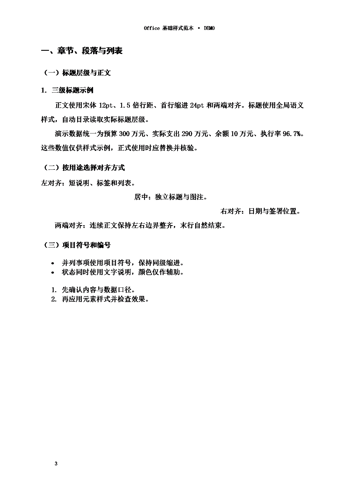
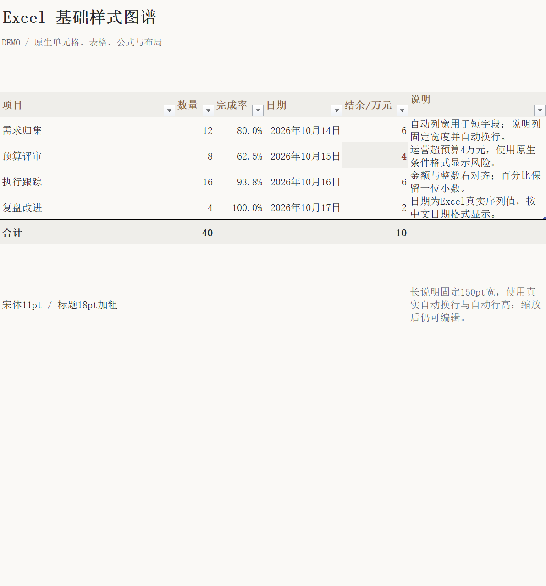
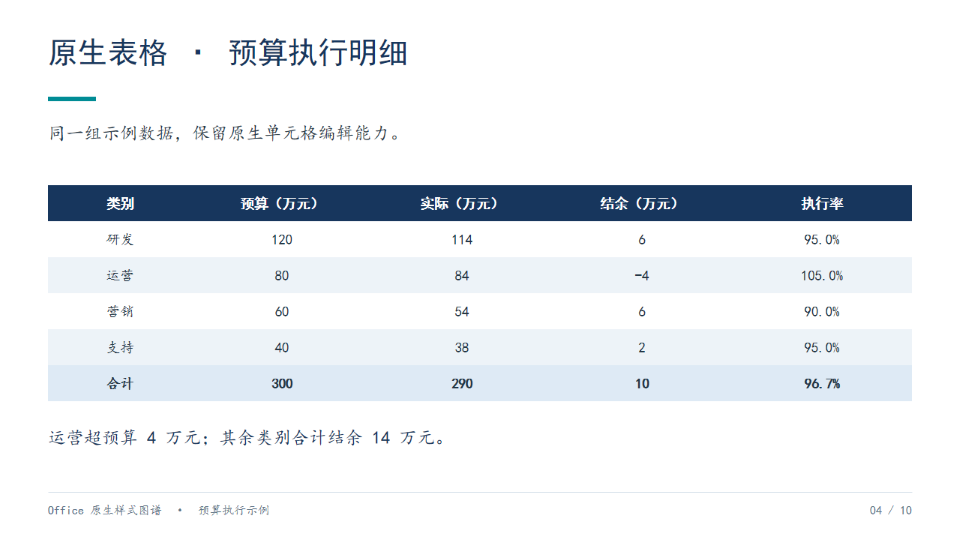

WordWord 基础样式范本封面与真实目录；章节、正文、列表、对齐；原生表格、颜色、图片与图注；页眉页脚和动态页码。←第 1 页 / 5第 2 页 / 5第 3 页 / 5第 4 页 / 5第 5 页 / 5→下载 DOCX原生整页预览 · PDF未导出
ExcelExcel 基础样式范本基础样式、数据与图表两个Sheet。加粗、自动列宽、换行与自动行高、数值格式、表格筛选、冻结、公式和原生图表。←第 1 页 / 2第 2 页 / 2→下载 XLSX完整 PDF
PowerPointPowerPoint 基础样式范本文字层级、图形、原生表格、数据图、嵌入图片、双栏、流程、时间线、网格与配色。←第 1 页 / 10第 2 页 / 10第 3 页 / 10第 4 页 / 10第 5 页 / 10第 6 页 / 10第 7 页 / 10第 8 页 / 10第 9 页 / 10第 10 页 / 10→下载 PPTX完整 PDF